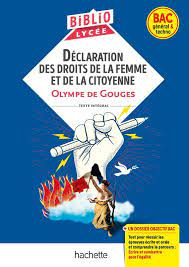
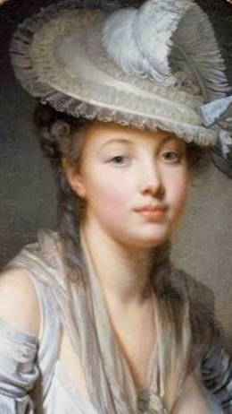

Déclaration
-Olympe de Gouges-
1791
Ecrire et combattre pour l'égalité

Auteur
Olympe de Gouges
Née en 1748, Marie Gouze grandit en Occitanie dans un milieu modeste. Mariée à l’âge de 16 ans à un homme plus âgé, elle trouve quelques années plus tard, grâce au veuvage, une liberté inattendue. Elle prend alors le nom d’Olympe de Gouges et monte à Paris poursuivre une carrière littéraire en publiant essentiellement des pièces de théâtre. Sensible aux questions progressistes de l’époque, elle milite pour la condition de la femme et l’abolition de l’esclavage. Son écrit le plus célèbre, La déclaration des droits de la femme et de la citoyenne, défend la cause des femmes, oubliées par l’univers masculin de la Révolution française. Elle est guillotinée en 1793 pour un manifeste jugé anti révolutionnaire dans lequel elle dénonçait les crimes de la Terreur.
Resume
La Déclaration des droits de la femme et de la citoyenne est composée de trois parties : un préambule, la déclaration elle-même et un postambule. Le Préambule Dans le Préambule, Olympe de Gouges demande que les femmes soient constituées en Assemblée nationale et que la déclaration rappelle à tous les membres du corps social leur droits et leurs devoirs vis-à-vis d’elles. Ce petit texte introduit les articles qui vont suivre. La Déclaration 3/7 La Déclaration elle-même est composée de 17 articles qui adoptent la même structure syntaxique que ceux de la Déclaration des droits de l’homme et du citoyen de 1789 (mentionnée DDHC ci-après). La Déclaration d’Olympe de Gouges est donc un texte-miroir voire un pastiche de la Déclaration des droits de l’homme et du citoyen. Les droits suivants y sont proclamés : L’égalité des droits de l’homme et de la femme (art 1) La liberté, la propriété, la sûreté et la résistance à l’oppression pour les deux sexes (art.2) La souveraineté qui est la réunion de l’homme et de la femme dans le corps politique (art.3) La protection des droits de la femme par les lois de la nature et de la raison (art. 4 et 5). Le droit pour la femme et l’homme de participer à l’élaboration des lois et de prétendre aux dignités selon leur mérite. (art. 6) L’égalité devant la loi pour les deux sexes, y compris pour les devoirs et les châtiments (art. 7, 8, 9 et 10). La liberté d’expression pour la femme (art. 10 et 11). La garantie des droits de la femme (art. 12) La contribution de la femme à l’impôt et le droit de participer à la distribution des places, des emplois, des dignités et de l’industrie. (art. 13 et 14). Le droit pour la femme de demander à tout agent public des comptes sur son administration (art 15). La participation des femmes à la rédaction de la Constitution (art.16). Le droit à la propriété, « inviolable et sacré » pour les deux sexes (art. 17). Le Postambule Le Postambule est un texte plus rhétorique qui commence par un appel à la lutte pour l’égalité : « “Femme, réveille-toi” ». Olympe de Gouges constate que malgré la Révolution, les femmes sont toujours méprisées et dédaignées. Elle évoque le rôle décisif des femmes dans l’Histoire. Mais une fois leur capital de jeunesse et de beauté disparu, ces dernières perdent leur influence dans la société. C’est pourquoi Olympe de Gouges propose de sécuriser leur situation juridique par le « “partage des fortunes entre les hommes et les femmes, et de l’administration publique” ». Olympe de Gouges s’insurge également contre l’institution du mariage, « “tombeau de la confiance et de l’amour ”». Elle souhaite préparer l’émancipation de la femme par l’éducation et les « conventions conjugales » qui transformeraient les relations conjugales 4/7 en relations contractuelles.
Personnages
Les personnages, ou plutot, le personnage prominent (s'il peut être considéré comme tel) est la femme citoyenne quoiqu'elle existe plus en tant que concept ou qu'idée que personnage fictionnel ou nom quelconque.
Themes
L’égalité :
• L'égalité naturelle :
Olympe de Gouges soutient que l'égalité entre les femmes et les hommes est intrinsèquement inscrite dans la nature, ce qui lui confère un caractère inaliénable. Dans l'article 5, elle fait référence aux "lois de la nature et de la raison", une mention absente de la Déclaration des Droits de l'Homme et du Citoyen (DDHC). Selon elle, les propriétés sont considérées comme un "véritable patrimoine de la nature" à partager entre hommes et femmes (article 17). Contrairement à la croyance répandue au XVIIIe siècle, qui soutenait que la nature créait des différences entre les sexes basées sur des critères tels que la force physique, Olympe de Gouges affirme que la nature est placée sous l'égide d'une autorité rationnelle et juste, "l'Être suprême" (préambule), qui valorise l'égalité entre les femmes et les hommes.
La justice :
• La justice distributive :
La Déclaration des Droits de la Femme et de la Citoyenne est avant tout un texte juridique dont l'objet principal est la justice. Olympe de Gouges en a une conception distributive, c'est-à-dire qu'il s'agit de répartir les biens, les dignités, les emplois et les récompenses en fonction de la valeur et du mérite de chacun (article 6). Selon elle, "toutes les citoyennes et tous les citoyens, étant égaux à ses yeux, doivent être également admissibles à toutes les dignités, places et emplois publics, selon leurs capacités, et sans autres distinctions que celles de leurs vertus et de leurs talents". Elle insiste également sur le principe de responsabilité, indissociable de la justice. Elle interprète ainsi les articles 7, 8, 9 et 10 de la DDHC pour affirmer que la loi doit s'appliquer avec la même rigueur aux femmes et aux hommes. Olympe de Gouges pousse cette logique jusqu'à revendiquer le "droit" pour une femme d'être condamnée à l'échafaud, affirmant que "nul ne doit être inquiété pour ses opinions mêmes fondamentales, la femme a le droit de monter sur l'échafaud" (article 10).
Les libertés politiques pour les femmes :
Si Olympe de Gouges revendique le droit des femmes à l'échafaud, c'est pour mieux justifier leur droit de "monter à la tribune". Elle met en valeur le rôle politique des femmes et réclame dans l'article 10 la liberté d'expression pour tous. Elle souhaite également que les femmes soient intégrées à l'administration et occupent des postes publics importants (article 13), et qu'elles jouent un rôle décisionnaire dans la répartition de l'impôt, symbole d'appartenance à la nation. L'auteure va plus loin dans l'article 16 en défendant le rôle actif des femmes dans la rédaction de la Constitution. En tant que partie intégrante de la nation, les femmes devraient pouvoir assumer tous les rôles politiques et occuper tous les échelons des emplois publics.
La Révolution :
Pour Olympe de Gouges, il est nécessaire de mener une "Révolution dans la Révolution". Sa réécriture de la Déclaration des Droits de l'Homme et du Citoyen de 1789 a une haute valeur symbolique : elle démontre que la Révolution est incomplète et ne réalise pas l'égalité des droits qu'elle était censée promouvoir.
Le mariage :
Dans le postambule, Olympe de Gouges affirme que "le mariage est le tombeau de la confiance et de l'amour". Elle souhaite remplacer ce sacrement religieux par des "conventions conjugales" afin que les relations entre époux soient fondées sur un contrat, une sorte de pacte civil qui accorde à la femme une place digne au sein de son foyer et de la société.